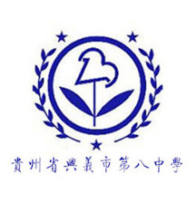
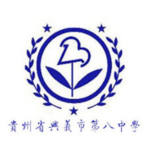

贵州省兴义市第八中学，简称兴义八中，创建于1996年。是贵州省省级示范性普通高中。学校占地216亩，森林覆盖面积超过100亩。贵州醇酒厂投资的兴义八中创办于1996年，办学之初高一四个班都招不满，人心思走、动荡不安。2001年后，靠大胆改革创新，出台《整体改革方案》，坚守"以德为本、务本求真、自强不息；超越自我、文化兴校、追求卓越"的核心办学理念，求实奋进，后发赶超，现已有在校学生3000余人。办学才短短二十年，就取得了诸多骄人的成绩，被《中国教师报》称为"山沟里飞出的金凤凰"，被《中国教育报》赞为"让布依子女都上一本大学"的中学，被《贵州教育》称为"走特色办学之路"的中学。 享有较高的办学声誉。八中是全国群众体育先进集体、全国教育系统先进单位、全国中小学图书馆先进集体、全国奥林匹克教育示范学校、国家基础教育实验中心外语教育研究中心实验学校、全国绿色学校创建活动先进学校、全国国民语文应用能力实验校。是贵州省省级示范性普通高中。获省州市等荣誉上百项，是享誉滇黔桂的优质品牌中学，已跻身于中国高中排行榜100强校之列。 八中是近年保持贵州省高考上北大清华、上985大学、600分以上、一本、二本以上"五率"比率综合全省第一的中学，有40%的毕业生能上985大学，近年已培养出7名省状元。2011年后，每年被北大、清华录取的人数保持两位数，占两校在贵州招生总数的10%到25%。2015年，兴义八中成功揽获全省三"状元"，创下贵州高考历史上三个第一:即第一次出现同一学校诞生"三状元"、第一次出现同一学校并列"状元"、文科总分创贵州高考有史以来总分第一（704分）。27人被清华北大录取；全省前10名占6人；全省前100名占29人；600分以上220人（600分以上人数全省第二），占全省600以上学生总数的8%；一本率（含册望班）91.44%；二本率（含册望班）99.24%；一本、二本上线率全省第一。此外还诞生了5个一本率100%的班。2016年，兴义八中继去年揽下三顶状元桂冠之后，余明卫以709分再夺全省文科总分第一名，成功蝉联省文科状元！周易宇同学以文综290分高分勇夺全省文综单科状元！600分以上306人（600分以上人数全省第二）；15人被清华北大录取；一本率高达95.63%，创历史新高。此外诞生了7个一本率100%的班级。北京有西藏班，八中有册望班。2016年，八中精准扶贫任务大幅度降分录取的册亨、望谟农村少数民族贫困生，高考全部超过二本线，一本率更是高达92.5%。兴义八中2017年的高考呈现多个亮点：录取北大、清华16人，录取北大、清华总人数在全省名列前茅；录取一流大学人数众多；600分以上共233人，高分段突出；总体成绩优异，三分之一的同学上985录取线，一本率达93%（含册望班），二本率（含册望班）高达99.9%，毕业率约等于本科率。 八中最大的亮点是：德育为先、能力为重、素质为本。到了八中的学生能享受更好的优质教育，到了八中的学生都能得到更好的发展。 拥有优良的育人环境。八中占地216亩，70%占地面积是绿色生态植物，森林覆盖面积超过100亩，被誉为"森林中的校园"，每一幢建筑都处于树林环抱之中，每一个角落都有校园文化的亮点。在八中生活就是在绿色氧吧里生活，在文化氧吧里生活。八中是平安校园、生态校园、绿色校园、书香校园、人文校园、和谐校园、环境模范校园、大数据智慧校园。 具有独到的八中氛围。八中具有独具一格的、浓厚的育人氛围、具有感染力、亲和力、感召力、吸引力的氛围，是一种和谐、融洽、进取、竞争的氛围。八中良好的教学氛围、良好的人际氛围，让近悦远来，使学子向往，让进了八中的学生在良好氛围熏陶感染下积极向上、发奋图强。八中让学生成才，让家长放心，让社会满意。 丰富多彩的校园活动。在八中，有中学生领导力开发班，高素养教育探究，自主选择走班式校本课程，丰富多彩的社团活动，被学生赞誉为最牛的篝火节、泼水节。每个月都有丰富多彩的校园文化节日活动，每个月都有"有爱心、会做人、会学习、会生活、会管理、会创新、有特长、有创见"的3·5·1素质教育其中之一的主题月活动，它们让学生的个性得到充分的张扬，兴趣得到充分的满足，特长得到充分的展示，能力得到充分的发展，素质得到充分的提升。每年与北大、清华、复旦、香港中文大学、美国斯坦福大学等一流大学学生合作的科技夏令营、民族未来夏令营、英语夏令营等（有时到八中参加夏令营的大学学生国别多达20个），为学生的成长增添新的通途。 独具一格的办学特色。本着"人无我有，人有我优，人优我精，人精我新，努力办出自己的特色"的构思，除了抓好德育、智育、体育、美育外，还开展了自身特色的动育（活动育人、劳动育人）、境育（环境育人）、食育（饮食科学、习惯、卫生、养身教育）、心育（心理健康教育）。八育并举，八园建设，彰显了八中"文化兴校，追求卓越"的办学特色。
 
